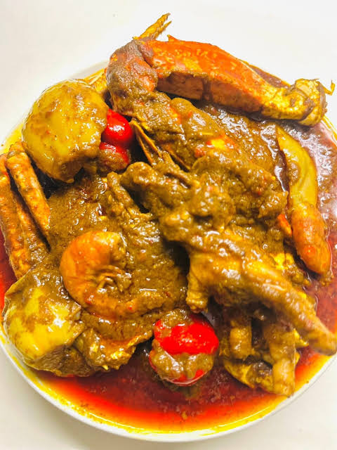

In a large heavy-bottomed pot, combine fresh meats (beef, goat, chicken) with half of the chopped onions, 2 bouillon cubes, black pepper/thyme, and a pinch of salt. Add 1 cup of water and simmer over medium heat for 20–25 minutes until tender. Add smoked turkey, stockfish, or cow skin during the last 10 minutes.
If using canned palm nut concentrate, scoop it into a bowl and dilute it with 3–4 cups of warm water until smooth and liquid. (If using fresh palm nuts, strain the extracted palm juice through a fine mesh sieve into a separate bowl to remove all fibers and seeds).
Pour the palm nut liquid directly into the pot with the cooked meats and broth. Add the remaining onions and whole or blended Scotch bonnet peppers. Bring the pot to a rapid boil uncovered over medium-high heat.
Let the soup boil uncovered for 45–60 minutes. As it cooks down, the foam on top will disappear, the liquid will reduce significantly, and natural palm oil will begin to glisten on the surface. Add fresh shrimp or crabs during the final 15 minutes
Taste the thick, creamy soup and adjust seasoning with the remaining Maggi cube or salt. Lower the heat to medium-low and simmer for another 10–15 minutes until it reaches a rich, buttery consistency. Add some pieces of diced bell pepper as garnishing.
Serve piping hot over a mound of steamed white rice, fufu, or dumboy as it is usually consumed in Liberia, West Africa.